수능(국어영역) (2015-09-02 기출문제)
1. <보기>는 [A]의 일부이다. <보기>의 [가]에 들어갈 학생의 대답으로 가장 적절한 것은?(1번 공통지문 문제)
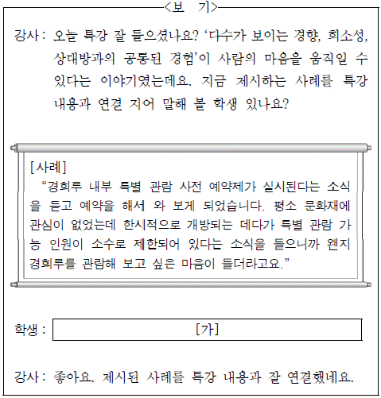
- 경회루 내부 개방으로 문화재에 대해 평소 갖고 있던 관심이 더욱 커졌다는 내용이니까 희소성의 원리를 보여 준다고 생각합니다.
- 경회루를 관람해 보고 싶던 차에 사전 예약제 실시 소식을 듣고 예약을 했다는 내용이니까 다수의 사람들이 하는 행동을 따라하려는 심리를 보여 준다고 생각합니다.
- 한시적으로 개방되는 경회루의 관람 인원이 소수로 제한되어 있다는 소식에 경회루를 관람하고 싶은 마음이 들었다는 내용이니까 희소성의 원리를 보여 준다고 생각합니다.
- 특별 관람 신청을 사전 예약제로 받는다는 소식에 경회루를 관람해 보고 싶은 마음이 들었다는 내용이니까 사전 예약한 사람들과 공감대를 형성하려는 심리를 보여 준다고 생각합니다.
- 경회루가 한시적으로 개방된다는 소식에 경회루를 관람해보고 싶은 마음이 들었다는 내용이니까 상시적으로 문화재를 관람하는 사람들과의 공통된 경험을 통해 공감대를 형성하려는 심리를 보여 준다고 생각합니다.
(정답률: 알수없음)

2. [A]～[E]에 활용된 발표 전략으로 적절하지 않은 것은?(3번 공통지문 문제)
- [A] : 청중의 관심을 유발하기 위해 로봇과 관련된 최근 사례를 제시하며 발표를 시작하고 있다.
- [B] : 청중과의 상호 작용을 위해 로봇이란 말이 무엇을 떠오르게 하는지 질문을 하고 그에 대한 답변을 듣고 있다.
- [C] : 청중들이 발표 대상을 시각적으로 확인할 수 있도록 매체를 활용하여 로봇의 형태를 제시하고 있다.
- [D] : 로봇의 형태가 변화해 온 이유를 설명하기 위해 다양한 예를 들고 있다.
- [E] : 국내 로봇 시장 규모의 증대에 관한 보고서를 근거로 발표 내용의 신뢰성을 높이고 있다.
(정답률: 알수없음)
3. 다음은 (나)를 들으며 학생이 메모한 내용이다. ⓐ～ⓒ의 공통점에 대한 설명으로 가장 적절한 것은? [3점](3번 공통지문 문제)
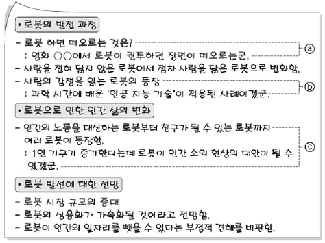
- 발표 내용을 자신의 경험이나 지식과 관련지으면서 들었다.
- 발표자가 제시한 자료가 신뢰할 만한지를 따지면서 들었다.
- 발표자가 언급했던 내용들 사이의 관계를 규정하면서 들었다.
- 발표 내용이 사실인지 발표자의 의견인지를 구분하면서 들었다.
- 발표자의 의견이 한쪽에 치우치지 않았는지를 판단하면서 들었다.
(정답률: 알수없음)
4. <보기>는 (나)를 작성할 때 활용한 자료이다. <보기>에 맞추어 [A]를 수정하고자 할 때, 적절하지 않은 것은? [3점](6번 공통지문 문제)
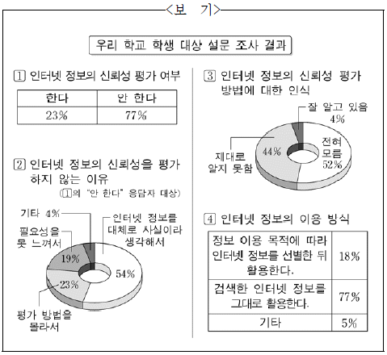
- ⓐ는 의 내용과 어긋나므로 ‘인터넷 정보의 신뢰성을 평가하지 않는다’로 수정한다.
- ⓑ는
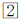
의 내용에 비추어 볼 때, 부정확한 합산 결과를 제시한 것이므로 ‘73%’를 ‘77%’로 수정한다. - ⓒ와 ⓓ는 과 의 내용을 구체적으로 전달하지 못하므로 ⓒ는 ‘77%로 매우 높은 것’으로, ⓓ는 ‘4%에 불과할 정도로 그 비율이 매우 낮았다’로 수정한다.
- ⓔ는 의 내용과 어긋나므로 ‘필요성을 못 느껴서’로 수정한다.
- ⓕ는 의 결과와 일치하지 않으므로 각각의 항목과 그에 맞는 수치를 제시하는 진술로 수정한다.
(정답률: 알수없음)
5. (나)의 ㉠～㉤을 고쳐 쓰기 위한 방안으로 적절하지 않은 것은?(6번 공통지문 문제)
- ㉠은 조사의 사용이 부적절하므로 ‘이용에’로 고친다.
- ㉡은 맞춤법에 어긋나므로 ‘바다이므로’로 고친다.
- ㉢은 어미의 사용이 부적절하므로 ‘알아보려고’로 고친다.
- ㉣은 사동 표현이 부적절하게 사용되었으므로 ‘수용하는’으로 고친다.
- ㉤은 그 앞에 ‘태도 형성을’이란 목적어가 있으므로 ‘강구할’로 고친다.
(정답률: 알수없음)
6. 학생의 글에 나타난 핵심 내용을 비유적으로 표현할 때 가장 적절한 것은?(9번 공통지문 문제)
- 긍정의 비가 내려 용서의 꽃을 피우다.
- 긍정의 거름을 주어 활력의 나무를 키우다.
- 긍정의 농부와 부정의 농부가 함께 살아가다.
- 긍정의 마음으로 친구와의 우정에 대해 생각하다.
- 긍정의 자세는 이웃과 소통하는 삶을 위해 필요하다.
(정답률: 알수없음)
7. <보기>의 ㉠～㉤의 밑줄 친 부분과 동일한 음운 변동이 일어난 예가 모두 바르게 제시된 것은?
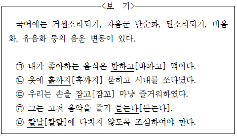
- ㉠의 예 : 먹히다, 목걸이
- ㉡의 예 : 값싸다, 닭똥
- ㉢의 예 : 굳세다, 솜이불
- ㉣의 예 : 겁내다, 맨입
- ㉤의 예 : 잡히다, 설날
(정답률: 알수없음)
8. 밑줄 친 부분이 <보기>의 ㉠에 해당하지 않는 것은?
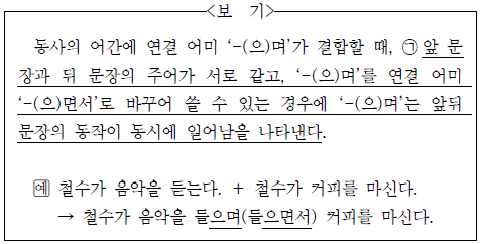
- 우리는 함께 걸으며 희망에 대해 이야기했다.
- 모두들 음정에 주의하며 노래를 제대로 부르자.
- 아는 사람 하나가 미소를 지으며 내게 다가왔다.
- 마라톤 선수가 가쁜 숨을 몰아쉬며 결승선을 통과했다.
- 출근할 때, 일부는 버스를 이용하며 일부는 지하철을 이용한다.
(정답률: 알수없음)
9. 밑줄 친 부분이 <보기>의 ㉠에 해당하지 않는 것은?
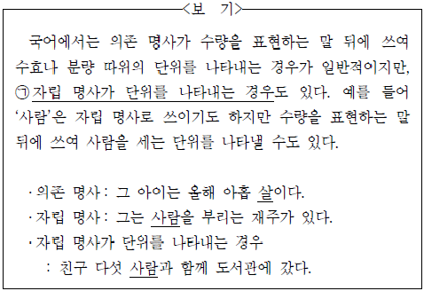
- 이 글에는 여러 군데 잘못이 있다.
- 앉은자리에서 밥 두 그릇을 다 먹었다.
- 시장에서 수박 세 덩어리를 사 가지고 왔다.
- 할아버지께서는 밥을 몇 숟가락 겨우 뜨셨다.
- 나는 서너 발자국 뒤로 물러서다가 냅다 도망쳤다.
(정답률: 알수없음)
10. <자료>와 같이 문장을 수정할 때 고려한 사항을 <보기>의 ㉠～㉣에서 고른 것은?
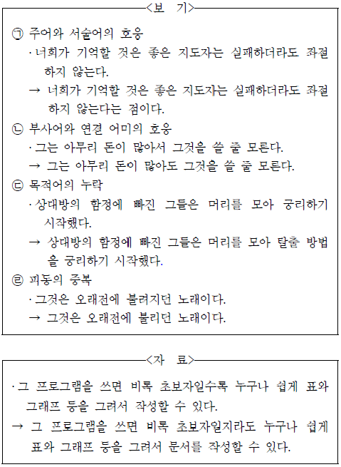
- ㉠, ㉡
- ㉠, ㉢
- ㉡, ㉢
- ㉡, ㉣
- ㉢, ㉣
(정답률: 알수없음)
11. 밑줄 친 부분이 <보기>의 ㉠에 해당하는 예로 적절하지 않은 것은?
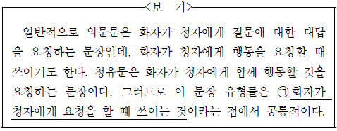
- A : 괜찮다면, 우리 여기서 잠깐 기다릴래요?
B : 좋아요. 10분만 더 기다려요. - A : 다친 곳은 어떤가? 한번 보세.
B : 보시다시피 많이 좋아졌습니다. - A : 저기요. 먼저 좀 내립시다.
B : 아, 예. 저도 여기서 내려요. - A : 저 혹시, 모자를 벗어 주실 수 있을까요?
B : 제가 방해가 되었군요. 미안합니다. - A : 어디 보자. 내가 다 챙겼나?
B : 거기서 혼자 뭐 해요. 빨리 나와요.
(정답률: 알수없음)
12. 윗글의 ㉠과 ㉡에 대하여 추론한 내용으로 가장 적절한 것은?(16번 공통지문 문제)
- ㉠을 지닌 특정 해시 함수를 전자 문서 x, y에 각각 적용하여 도출한 해시 값으로부터 x, y를 복원할 수 없다.
- 입력 데이터 x, y에 특정 해시 함수를 적용하여 도출한 문자열의 길이가 같은 것은 해시 함수의 ㉠ 때문이다.
- ㉡을 지닌 특정 해시 함수를 전자 문서 x, y에 각각 적용하여 도출한 해시 값의 문자열의 길이는 서로 다르다.
- 입력 데이터 x, y에 특정 해시 함수를 적용하여 도출한 해시 값이 같은 것은 해시 함수의 ㉡ 때문이다.
- 입력 데이터 x, y에 대해 ㉠과 ㉡을 지닌 서로 다른 해시 함수를 적용하였을 때 도출한 결과 값이 같으면 이를 충돌이라고 한다.
(정답률: 알수없음)
13. [가]에 따라 <보기>의 사례를 이해한 내용으로 가장 적절한 것은? [3점](16번 공통지문 문제)
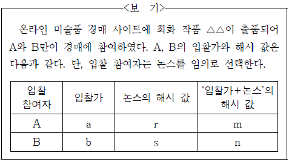
- A는 a, r, m 모두를 게시 기한 내에 운영자에게 전송해야 한다.
- 운영자는 해시 값을 게시하는 기한이 마감되기 전에 최고가 입찰자를 알 수 없다.
- m과 n이 같으면 r과 s가 다르더라도 A와 B의 입찰가가 같다는 것을 의미한다.
- A와 B 가운데 누가 높은 가격으로 입찰하였는지는 r과 s를 비교하여 정할 수 있다.
- B가 게시판의 m과 r을 통해 A의 입찰가 a를 알아낼 수도 있으므로 게시판은 비공개로 운영되어야 한다.
(정답률: 알수없음)
14. ㉠이 산패에 이르는 과정에 대한 이해로 적절하지 않은 것은? [3점](19번 공통지문 문제)
- A 지방질 분자가 홀수의 전자를 갖는 라디칼로 변화하는 현상이 나타난다.
- A 지방질에서 알코올은 하이드로퍼옥사이드의 분해 과정을 거쳐 만들어진다.
- A 지방질에서 변화한 알릴 라디칼은 A 지방질 분자보다 에너지가 낮아서 산소와 쉽게 결합한다.
- A 지방질에서 하이드로퍼옥사이드가 분해되어 생성된 알데히드는 비정상적인 냄새를 나게 한다.
- A 지방질에서 생성된 퍼옥시 라디칼은 새로운 알릴 라디칼을 만들고 하이드로퍼옥사이드가 된다.
(정답률: 알수없음)
15. 윗글의 ⓐ~ⓔ와 같은 의미로 사용되지 않은 것은?(19번 공통지문 문제)
- ⓐ : 지진이 일어나 피해를 주었다.
- ⓑ : 유리창에 빗방울이 무늬를 이루고 있다.
- ⓒ : 태풍은 우리나라에 피해를 주지 않았다.
- ⓓ : 차가 난간을 받으면 안 되니까 조심해라.
- ⓔ : 이 물질에는 염화마그네슘이 많이 들어 있다.
(정답률: 알수없음)
16. 윗글에 대한 이해로 적절하지 않은 것은?(22번 공통지문 문제)
- 독점에 대한 규제는 배분적 효율에 기여할 수 있다.
- 시장이 경쟁적이더라도 일부 소비자에게는 불이익이 발생할 수 있다.
- 생산적 효율을 달성한 독점 기업은 경쟁 정책으로 규제할 필요가 없다.
- 기업이 지켜야 할 소비자 안전 기준을 마련하는 조치는 소비자 권익에 도움이 된다.
- 소비자의 지위가 기업과 대등하지 못하다는 점은 소비자 정책이 필요한 이유가 된다.
(정답률: 알수없음)
17. ㉠～㉤에 대한 이해로 적절하지 않은 것은?(22번 공통지문 문제)
- ㉠은 생산적 효율을 통해 절감된 만큼의 비용에서 발생한다.
- ㉡에는 유해 상품으로 인한 소비자 피해를 경쟁 정책이 직접 해결해 주기 어렵다는 문제가 포함된다.
- ㉢은 시장에서 경쟁 상태가 유지되지 않아서 전체 소비자의 기준에서 피해가 발생하는 상황을 말한다.
- ㉣은 경쟁 정책 이외에 소비자 권익을 실현하기 위한 정책을 마련하라는 요구이다.
- ㉤은 경쟁 정책에서 소비자의 이익을 보호하기 위하여 취하는 구체적인 수단이다.
(정답률: 알수없음)
18. <보기>의 사례들 중 소비자 정책에 해당하는 것만을 있는 대로 고른 것은? [3점](22번 공통지문 문제)
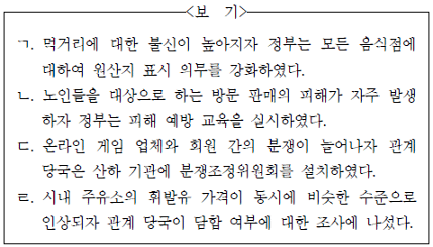
- ㄱ, ㄴ
- ㄱ, ㄹ
- ㄷ, ㄹ
- ㄱ, ㄴ, ㄷ
- ㄴ, ㄷ, ㄹ
(정답률: 알수없음)
19. 문맥상 ⓐ～ⓔ와 바꿔 쓰기에 적절하지 않은 것은?(22번 공통지문 문제)
- ⓐ : 이바지하는
- ⓑ : 내리는
- ⓒ : 늘리더라도
- ⓓ : 밀려난
- ⓔ : 세울
(정답률: 알수없음)
20. ㉠과 관련하여 추론할 수 있는 스타이컨의 의도로 적절하지 않은 것은? [3점](27번 공통지문 문제)
- 고난도의 합성 사진 기법을 쓴 것은 촬영한 대상들을 하나의 프레임에 담기 위해서였다.
- 원경이 밝게 보이도록 한 것은 <빅토르 위고>와 로댕 간의 명암 대비 효과를 내기 위해서였다.
- 로댕이 <생각하는 사람>과 마주 보며 같은 자세로 있게 한 것은 고뇌하는 모습을 보여 주기 위해서였다.
- 원경의 대상을 따로 촬영한 것은 인물과 청동상을 함께 찍은 근경의 사진과 합칠 때 대비 효과를 얻기 위해서였다.
- 대상들의 질감이 잘 살지 않도록 인화한 것은 대리석상과 청동상이 사람처럼 보이게 하는 효과를 얻기 위해서였다.
(정답률: 알수없음)
21. 다음은 학생이 쓴 감상문의 일부이다. 윗글을 바탕으로 할 때, ⓐ～ⓔ 중 적절하지 않은 것은?(27번 공통지문 문제)
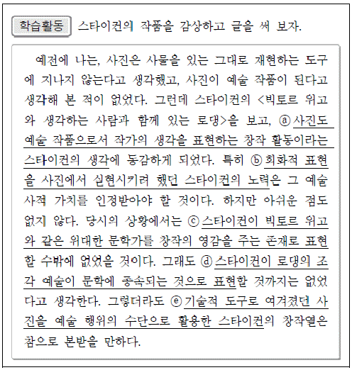
- ⓐ
- ⓑ
- ⓒ
- ⓓ
- ⓔ
(정답률: 알수없음)
22. ㉡의 문맥적 의미와 가장 가까운 것은?(27번 공통지문 문제)
- 이 소설가는 개성이 살아 있는 문체로 유명하다.
- 아궁이에 불씨가 살아 있으니 장작을 더 넣어라.
- 어제까지도 살아 있던 손목시계가 그만 멈춰 버렸다.
- 흰긴수염고래는 지구에 살고 있는 동물 중 가장 크다.
- 부부가 행복하게 살려면 서로를 존중하고 사랑해야 한다.
(정답률: 알수없음)
23. 윗글의 ⓐ～ⓔ에 대한 이해로 적절하지 않은 것은? [3점](31번 공통지문 문제)
- 이혈룡은 ⓐ라는 과제에 탁월한 답안을 제출하여 임금으로 부터 ⓑ에 합당한 인재로 인정받았다.
- ⓑ는 이혈룡이 공적 임무를 수행할 수 있는 자격이 주어졌음을 뜻하고, 임금에게 ⓓ를 올릴 수 있는 계기로 작용한다.
- ⓒ는 이혈룡이 평양에서 겪었던 일을 반어적으로 표현하며 ⓐ가 구현되는 것을 방해한다.
- ⓓ는 ⓒ를 계기로 작성되었으며 현재 ⓐ가 완전하게 실현되지 않았음을 보여 준다.
- ⓔ는 임금이 이혈룡에게 ⓒ를 바로잡는 공적인 임무를 수행 하도록 하는 내용을 담고 있다.
(정답률: 알수없음)
24. <보기>를 참조하여 윗글을 이해한 것으로 적절하지 않은 것은?(31번 공통지문 문제)
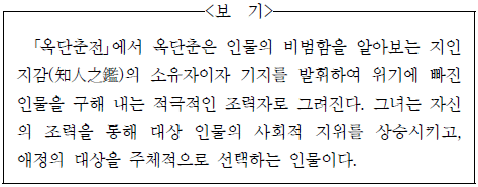
- 옥단춘이 오한을 핑계로 김 감사의 허락을 받은 후 연회장을 빠져나온 것에서 그녀의 기지를 엿볼 수 있군.
- 옥단춘이 이혈룡을 구해 줄 수 있는 인물로 김 감사를 선택한 것에서 여성으로서의 주체적 판단이 작용했음을 알 수 있군.
- 옥단춘이 김 감사에게 괄시받던 남루한 행색의 이혈룡이 비범한 인물임을 발견한 데서 그녀의 지인지감을 엿볼 수 있군.
- 가족들이 어려움에 처했던 이혈룡을 구해 준 옥단춘의 은혜에 감사한 것에서 조력자인 옥단춘의 역할을 인정한 것임을 알 수 있군.
- 옥단춘이 사공들에게 이혈룡의 몸값을 후하게 제시하고 구체적 방안을 알려 준 것에서 그녀의 적극적인 조력 의지를 엿볼 수 있군.
(정답률: 알수없음)
25. ㉠～㉤에 나타난, 말하는 이의 태도에 대한 설명으로 가장 적절한 것은?(34번 공통지문 문제)
- ㉠ : 일상을 권태롭게 여기는 태도가 ‘항상’을 통해 부각되고 있다.
- ㉡ : 불행했던 시절이 되돌아올 것에 대비하려는 태도가 ‘드디어’를 통해 부각되고 있다.
- ㉢ : 부정적 상황이 온전히 극복되지 못한 것을 안타깝게 여기는 태도가 ‘아직도’를 통해 부각되고 있다.
- ㉣ : 적대적인 것들로 인해 당황하는 태도가 ‘아무리’를 통해 부각되고 있다.
- ㉤ : 예상과는 다른 결과를 실망스럽게 여기는 태도가 ‘이미’ 를 통해 부각되고 있다.
(정답률: 알수없음)
26. <보기>를 바탕으로 (가), (나)를 이해한 내용으로 적절하지 않은 것은? [3점](34번 공통지문 문제)
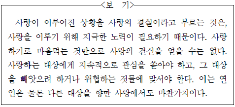
- (가)에서 ‘헐어진 성터’를 헤매고 ‘이야기’를 나누는 것은 사랑하는 대상에 대한 관심을 잃지 않았음을 의미한다.
- (가)에서 ‘몸’과 ‘맘’을 팔아버린 벗들의 삶은 사랑하는 대상을 되찾기 위한 지속적인 노력을 의미한다.
- (나)에서 ‘흙 속의 해충’을 제거하는 것은 사랑하는 대상을 위협하는 것들에 맞서려는 노력을 의미한다.
- (나)에서 ‘밤’을 새우는 것은 사랑하는 대상에 대한 관심을 지속하고 위협적인 상황으로부터 그 대상을 지키려는 노력을 의미한다.
- (가)의 ‘어느 언덕 꽃덤불’에 안기는 것과 (나)의 ‘새 과목’이 솟는 것은 노력을 통해 얻으려 하는 사랑의 결실을 의미한다.
(정답률: 알수없음)
27. ⓐ, ⓑ에 대한 설명으로 가장 적절한 것은?(34번 공통지문 문제)
- ⓐ는 시상 전개의 단서로서 마지막 연과 대응되어 작품의 주제를 강조한다.
- ⓑ는 글의 첫머리에 제시되어, 이어질 내용이 자연 친화적 이념의 역사를 포함하고 있음을 드러낸다.
- ⓐ는 사물에 비유됨으로써 경외감을, ⓑ는 다른 대상과 비교 됨으로써 비장감을 자아낸다.
- ⓐ는 시행 하나로 연이 구성되어, ⓑ는 낱말 하나로 문장이 구성되어 이후 드러날 인간 소외의 양상을 압축적으로 제시 한다.
- ⓐ, ⓑ는 모두 존재의 생성에서 소멸에 이르는 과정을 보여 주기 위한 출발점이 된다.
(정답률: 알수없음)
28. <보기>를 참고할 때 (다)에 대한 감상으로 적절하지 않은 것은?(34번 공통지문 문제)
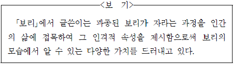
- ‘차가운 땅속’에서 추위를 견디는 보리의 모습을 통해, 어려운 상황을 견디는 인내심을 드러내고 있군.
- ‘하늘’을 향해 솟아오르는 보리의 모습을 통해, 강인한 의지와 진취적 자세를 드러내고 있군.
- ‘생명의 보금자리’를 깊이 뿌리박고 자라나는 보리의 모습을 통해, 끈질긴 생명력을 드러내고 있군.
- ‘봄의 춤’으로 표현된 보리의 모습을 통해, 성숙해질수록 겸손함을 잃지 않는 자세를 드러내고 있군.
- 노고지리에게 ‘깊고 아늑한 품속’을 내어 주는 보리의 모습을 통해, 포용과 배려로 주위와 조화를 이루려는 자세를 드러내고 있군.
(정답률: 알수없음)
29. 다음의 학습활동을 수행한 결과로 적절하지 않은 것은? [3점](39번 공통지문 문제)
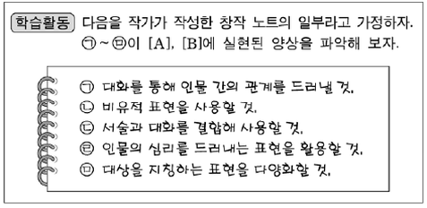
- ㉠은 [A]에서 ‘노인’과 ‘나’의 갈등을 해소하는 장치로 실현 되었군.
- ㉡은 [B]에서 ‘사람의 가죽은 질기다고 했습니다’라는 표현을 사용하는 방법으로 실현되었군.
- ㉢은 [B]의 ‘마음이 ～ 하였다’에서 인물의 성격을 드러내기 위해 서술과 대화를 결합하는 방식으로 실현되었군.
- ㉣은 [B]에서 ‘긴 한숨을 걷잡지 못하였다’를 통해 실현되었군.
- ㉤은 [A]와 [B]에서 동일 인물을 ‘그 애’, ‘그것’, ‘그놈’으로 바꾸어 부르는 방법으로 실현되었군.
(정답률: 알수없음)
30. ⓐ를 참고할 때, [가]에 대한 이해로 가장 적절한 것은?(39번 공통지문 문제)
- 나의 회상을 통해 떠오른 인물의 외양과 행동을 묘사하고 있다.
- 나의 회상 속에는 ‘자기’와 인물들 간의 외적 갈등이 드러나고 있다.
- 나의 회상을 통해 현재의 ‘자기’가 과거 속의 자아를 부정하고 있다.
- 나의 회상을 통해 인물이 처한 실제의 상황을 환상적 분위기로 그려 내고 있다.
- 나의 회상 속에는 인물의 현재의 처지와 미래의 모습이 구체적으로 제시되고 있다.
(정답률: 알수없음)
31. <보기>를 참고하여 윗글을 감상할 때, 적절하지 않은 것은?(39번 공통지문 문제)
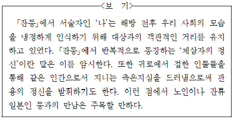
- ‘일본인 아낙네’의 아이들이 ‘야단’인 모습을 ‘비참’하다고 한것에서, ‘나’의 객관적 태도에 변화가 있었음을 알 수 있어.
- ‘일본인 아낙네’가 자신의 아이들과 함께 행상로 위에 서 있는 모습을 떠올린 것에서, ‘나’가 ‘노인’의 마음을 헤아리게 되었음을 알 수 있어.
- ‘노인’이 자신의 자식을 죽인 사람들의 처지가 바뀐 것을 보고 ‘눈물’이 난다고 한 말에서, ‘노인’이 그들에 대해 연민을 느꼈음을 알 수 있어.
- 잔류 일본인에 대한 ‘노인’의 마음을 ‘측은한 표현’이라 한 것에서, ‘나’가 제삼자의 정신에서 벗어나 관용의 자세까지 보여 주고 있음을 알 수 있어.
- ‘일본인 아낙네’가 ‘실심한 사람 모양으로’, ‘행상의 여인네’의 ‘손가락을 멀거니 바라만 보고 있’는 모습에서, 두 사람이 서로를 위로하며 격려하고 있음을 알 수 있어.
(정답률: 알수없음)
32. ㉠～㉤에 대한 이해로 적절하지 않은 것은?(43번 공통지문 문제)
- ㉠ : 열심히 일해 달라는 부탁으로, 현실의 어려움을 벗어나려는 마음이 투영되어 있다.
- ㉡ : 부역과 세금을 감당할 마땅한 방법이 없다는 것으로, 백성으로서의 의무를 모면하고자 하는 의도가 반영되어 있다.
- ㉢ : 겨울이 따뜻하다고 해도 몸을 가리기 어렵다는 것으로, 겨울나기에 필요한 최소한의 옷가지도 부족함을 보여 준다.
- ㉣ : 솥 시루를 방치해 두어 녹이 슬었다는 것으로, 떡과 같은 음식을 해 먹을 형편이 아님을 보여 준다.
- ㉤ : 친척들과 손님들을 접대할 방도가 없다는 것으로, 도리를 다할 수 없을 것에 대한 염려가 반영되어 있다.
(정답률: 알수없음)
33. [A]와 [B]에 주목하여 윗글을 감상한 것으로 가장 적절한 것은?(43번 공통지문 문제)
- [A]의 ‘일정 고루 하련마는’에 나타난, 모든 사람은 평등하다는 화자의 신념이 [B]의 ‘하늘 만든 이내 가난’에 이르러서 강화되어 있군.
- [A]의 ‘어찌 된 인생이’에 나타난 화자의 비관적 인생관이 ‘싸리피 바랭이’에 이르러서는 낙관적 세계관으로 변화되어 있군.
- 화자의 가난한 삶이 [A]의 ‘이다지도 괴로운고’에서는 탄식의 대상이지만 [B]의 ‘서러워해 무엇하리’에 이르러서는 체념적 수용의 대상으로 변모되어 있군.
- ‘부러워하나 어찌하리’에 나타난 화자의 열등감이 [B]의 ‘설마한들 어이하리’에 이르러서는 우월감으로 극복되어 있군.
- ‘이 얼굴 지녀 있어’에서는 화자가 자신의 능력에 대해 자신감을 보이나 [B]의 ‘빈천도 내 분수니’에 이르러서는 그 자신감이 약화되어 있군.
(정답률: 알수없음)